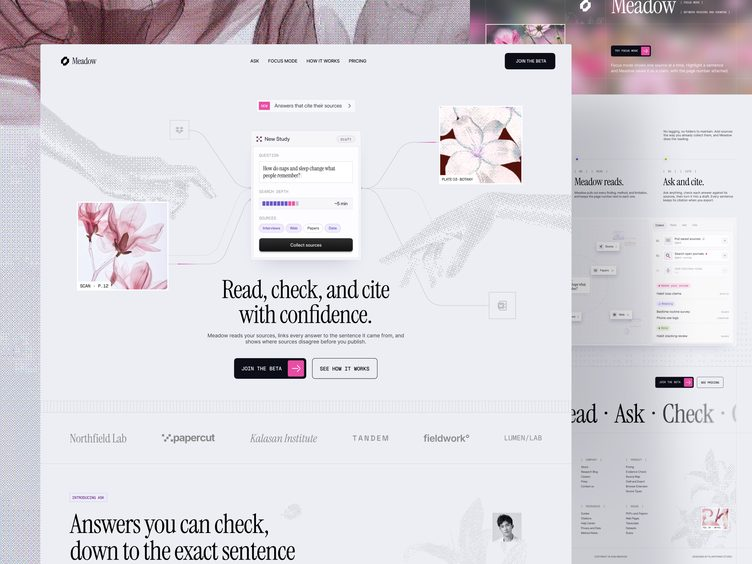

Meadow — Saas Research Management Website Design
by Permadi Satria Dewanto for Plainthing Studio
SaaSSaaS
科研管理 SaaS 落地页 Meadow：大标题“Read, check, and cite with confidence.”，上方 New Study 面板里“答案要标明出处”配粉色花卉图与细线手稿插画，下方 Northfield Lab、papercut 等机构背书；学术工具用“花卉柔美视觉 + 逐句可查的引用承诺”把严谨做得不冷硬。Meadow, a research-management SaaS landing page: the headline "Read, check, and cite with confidence." sits under a New Study panel promising answers that cite their sources, softened by pink floral photography and fine-line hand illustrations, with Northfield Lab and papercut as backers; an academic tool makes rigor feel warm by pairing floral softness with a checkable-citation promise.